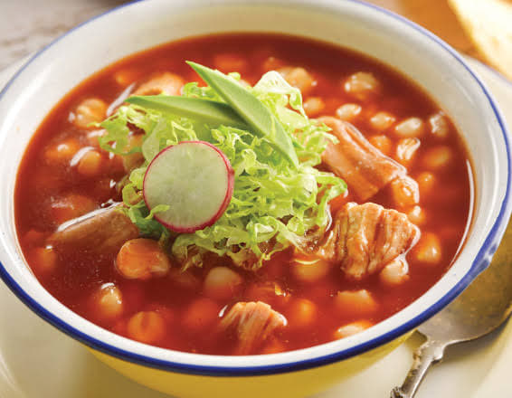

- 1 kg de maíz pozolero
- 1/2 kg de costilla de cerdo cortada en trozos
- 1/2 kg de lomo de cerdo
- 4 litros de agua
- 6 dientes de ajo pelados
- 1 cebolla
- 3 cucharadas de sal
- 5 chiles guajillos
- 2 hojas de laurel
- 1/2 cucharadas de oregano
Pozole
- Agregar en la olla grande el agua junto a la carne, 3 ajos, 1/4 de cebolla y el laurel. cocinar a fuego medio durante una hora y media.
- Mientras la carne se vaya cociendo remover la capa de espuma y grasa, de ser necesario agrega más agua.
- Cuando la carne se desprenda del hueso retirar del caldo junto a los demas ingredientes y recervar el agua.
- Con el caldo aun cocinando agregara el maíz junto con los sobrantes del ajo y cebolla y agregar sal al gusto.
- Para preparar la salsa calentar los chiles en agua durante 25 minutos.
- Pasados los 25 minutos retirar los chiles y moler en la licuadora junto al ajo y cebolla de la carne y tambien el oregano y sal.
- desmenuzar la carne.
- Ya con el maiz floreado agregar la carne, y salsa, y deja cocinar a fuego bajo hasta que este listo.